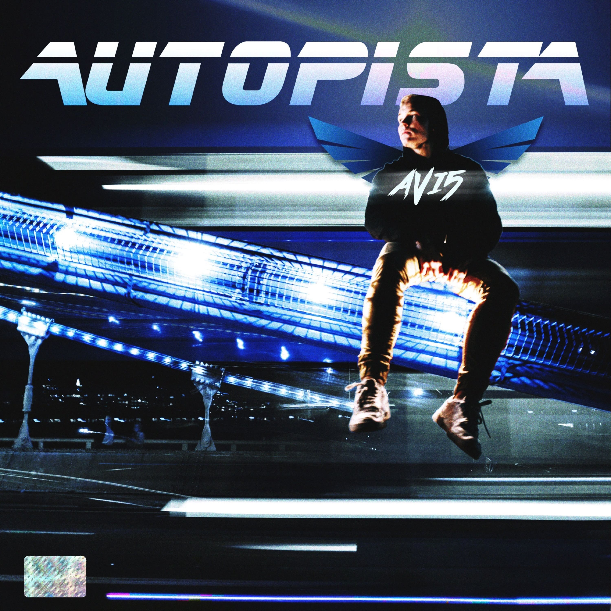

Neuigkeiten & Blog

"AUTOPISTA" - Neues Release von AVI5
Unser Künstler AVI5 hat heute seine neue Single veröffentlicht – jetzt auf Spotify streamen!
Studio-Update: Behind the Scenes
Ein exklusiver Blick hinter die Kulissen der neuesten Aufnahmesessions bei 122 Records.